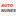

AutoNunesFundo papel #F6F4EF. A correspondente clara da opção 25, com o lettering original e a composição alinhada. Fixo nos dois modos do website; o CRM mantém o seu ícone.


AutoNunesICO · SVG com arte raster original · PNG 180 · PNG 192 · PNG 512